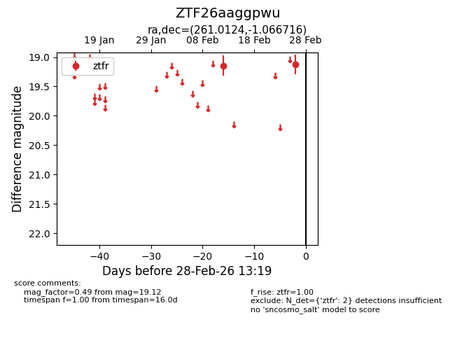
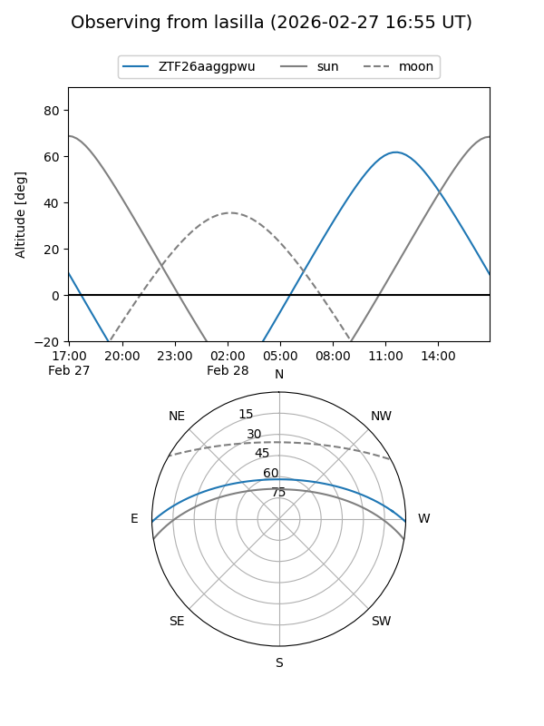
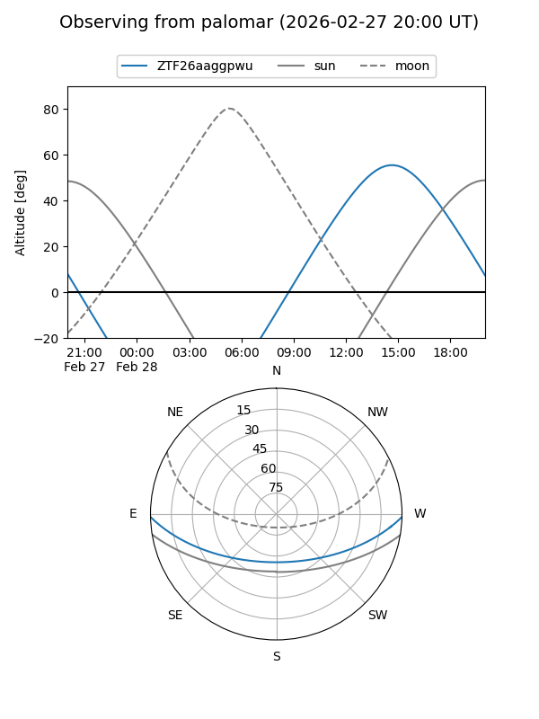

ZTF26aaggpwu
Target ZTF26aaggpwu at 2026-02-28 13:21
Aliases and brokers:
FINK: link
Lasair: link
ALeRCE: link
alt names
ZTF26aaggpwu (ztf,fink_ztf)
Coordinates:
equatorial (ra, dec) = 261.0124,-1.06672
equatorial (HMS+DMS) = 17:24:02.98,-01:04:00.18
galactic (l, b) = (21.5851,+18.82298)
Flags:
Photometry:
last ztfr=19.12
2 ztfr detections
Lightcurve

Visibility


Additional plots